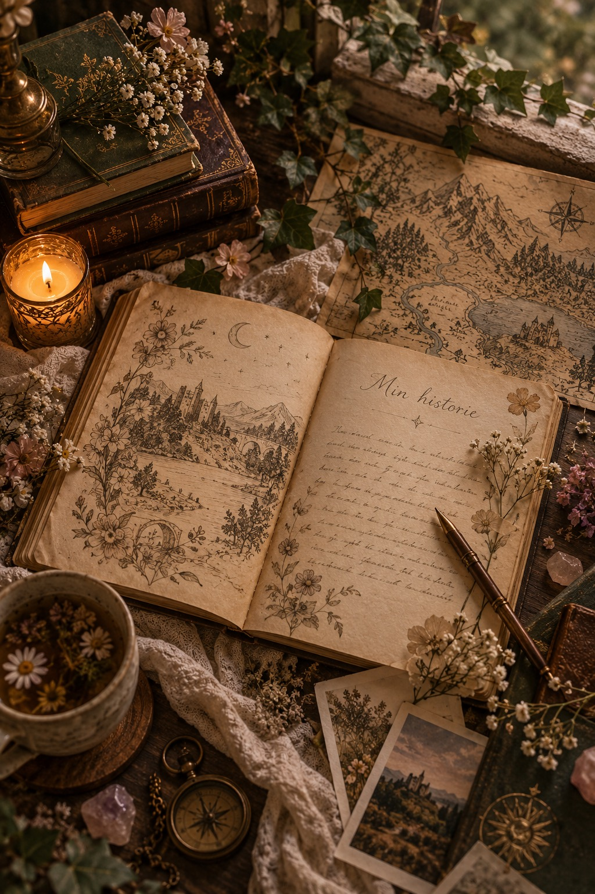
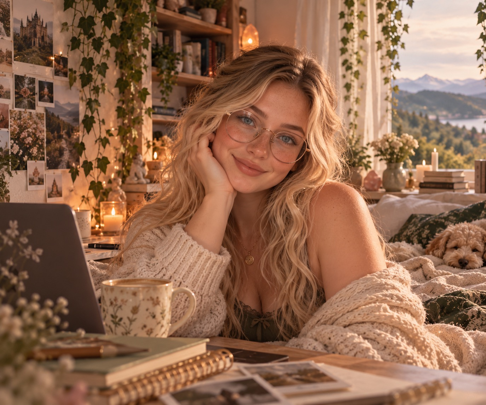
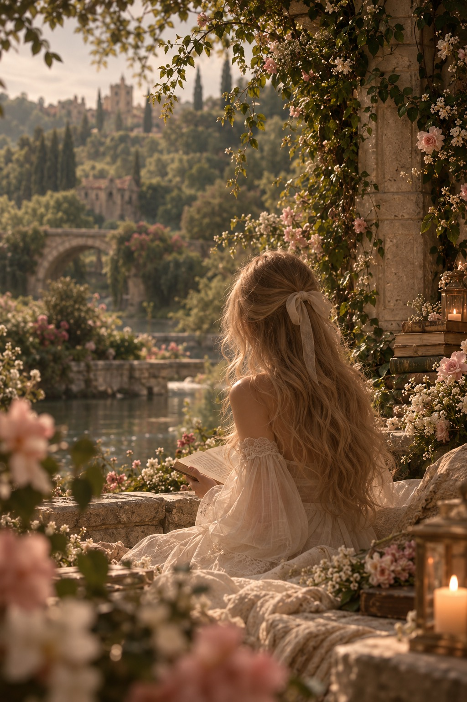
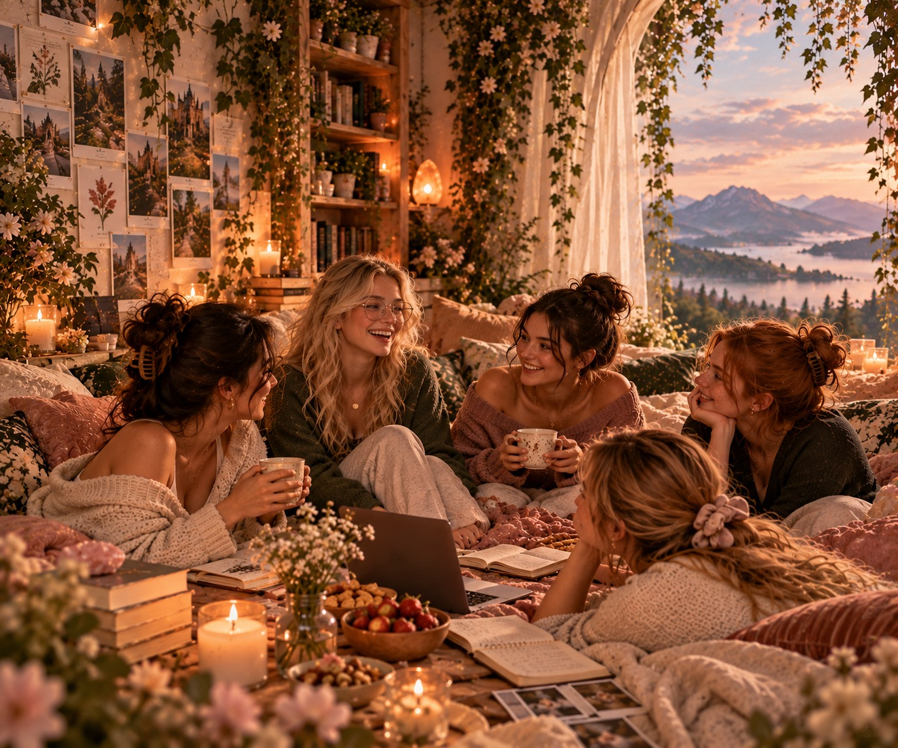

Historien bag Bloom Within
Det fællesskab, jeg selv har manglet.
Et trygt sted til ærlige samtaler, personlige fortællinger og alt det, der gør os til dem, vi er.
Lær historien at kende
Hej, og velkommen til mit lille hjørne af internettet.
Bloom Within er mere end bare en blog for mig. Det er en personlig drøm om at skabe det fællesskab, jeg selv har manglet og på mange måder stadig mangler.
Et sted, hvor vi kan snakke åbent om alt det, der fylder i livet. Fra angst, stress, ADHD og kroniske sygdomme til menstruation, venskaber og hverdagens små nedture og glæder.
Jeg ønsker at skabe et sikkert sted, hvor ingen føler, at deres tanker er for mærkelige, deres spørgsmål er for pinlige eller deres udfordringer er for små.
Mere end mine diagnoser.
Jeg er en ung kvinde, der lever med angst, ADHD, endometriose og ordblindhed. Derudover er jeg introvert og møder mange udfordringer i min hverdag.
Det er en del af mit liv, men det er ikke alt, hvad jeg er.
Jeg ved, at det kan være svært at finde et sted, hvor man føler sig forstået, især når man lever med udfordringer, som andre ikke nødvendigvis kan se eller forstå.
Jeg deler ikke mine erfaringer, fordi jeg har alle svarene. Jeg deler dem, fordi jeg tror på, at åbenhed kan skabe forståelse, og at vores historier kan gøre en forskel for andre.


Er sted med plads til hele dig.
Min vision med Bloom Within er at skabe et inkluderende fællesskab, hvor unge kvinder kan være sig selv.
Et sted, hvor vi kan tale om mental sundhed, fysiske udfordringer, diagnoser og alle de emner, der nogle gange føles svære at bringe op.
Men også et sted, hvor der er plads til glæde, interesser, drømme, kærlighed og små succeser.
Her behøver du ikke have en diagnose eller stå midt i en svær periode for at høre til.
Du er velkommen, præcis som du er.
Fordi vi ikke skal stå alene.
En stor del af drømmen bag Bloom Within er Bloom Together.
Et fællesskab, hvor vi kan dele vores tanker, erfaringer, spørgsmål og oplevelser med hinanden.
Jeg drømmer om et sted, hvor man kan dele en lille sejr, stille et spørgsmål eller finde forståelse hos andre.
Bloom Together er stadig under udvikling. Målet er at skabe et fællesskab med respekt, tydelige rammer og plads til forskellighed.

Du behøver ikke blomstre hver dag for at være i udvikling.
Jeg ønskede at skabe et sted, jeg selv ville have haft glæde af. Et sted, hvor man kan være nysgerrig, sårbar, glad, usikker og alt derimellem.
Hvis Bloom Within kan få bare én person til at føle sig lidt mere forstået eller mindre alene, så har det allerede betydet noget.
Tak, fordi du er her.